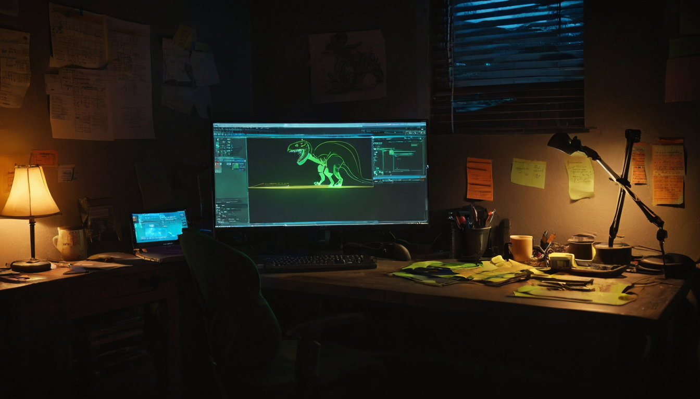

I came across this post because it felt like a fun, unexpected discovery. Someone shared a new digital creature, and the excitement was genuine. It made me curious: what are these Wizsaurus Rexes, and why are they being promoted so enthusiastically?
@Alfonsojm1 shared a post on X announcing the immediate availability of Wizsaurus Rexes, calling them 'super cool' and encouraging others to 'go get them and pick some up'. The post includes links to Mint Garden and an animated GIF of the creature. The tone is upbeat, and the message is straightforward: these are new digital collectibles, and they are available now.
Wizsaurus Rexes are live on Mint Garden. What makes this worth a look is not the category but the specific thing: someone put out an animated creature with genuine enthusiasm and a direct link to go get one. In a space where most launches come with roadmaps and promises and complicated rollouts, that low-friction honesty is actually notable. For collectors, there is a specific creature available right now. For anyone watching what gets released on Mint Garden, this is a new entry worth knowing about.
Wizsaurus Rexes are digital collectibles available on Mint Garden. The animated GIF shared in the post shows a creature with real visual personality. Whether you collect digital art or just want to see what is dropping on Mint Garden right now, this is something concrete you can go look at today.
Digital art enthusiasts, NFT collectors, and anyone interested in animated creature designs. People who follow what is releasing on Mint Garden will want to know this is out there.
For anyone releasing or thinking about releasing a collectible on Mint Garden, this drop is a live example worth watching. @Alfonsojm1 did not announce a whitepaper or promise a roadmap. The approach is: here is the creature, here is the link, go pick some up. Whether that stripped-down launch is enough to move a collection is a question this drop will answer in real time over the next few days.
Not every collectible needs to solve a problem. Wizsaurus Rexes are a specific creature design that someone made and decided to release. The more interesting question is whether the art is distinctive enough that it develops its own following, and that you can only find out by going to look at the collection.
There is not much public detail yet about collection size, pricing tiers, or what comes after the initial drop. Those details would help a collector decide how quickly to move on it.
Go to the Mint Garden collection page directly and look at the full collection, not just the GIF from the post. The variety and number of pieces already minted will tell you more than the promotional post does about whether this is worth collecting.
If the creature design connects with people, it could build a small following around the character. That is usually how digital art projects develop traction: one fan at a time, not a sudden spike.
What caught me here was not the category, it was the specific creature. A wizard dinosaur is a committed concept, and the GIF shows enough personality that you either get it immediately or you do not. I find myself genuinely curious which way the Mint Garden community goes on this one. I also like that @Alfonsojm1 did not overthink the launch. Post the creature, share the link, tell people to pick some up. For a project like this, that is the right call.
The signal worth watching is not whether the initial drop sells but whether the Wizsaurus Rex starts showing up in replies and profile pictures across the community. That is the difference between a one-time release and a character that actually takes hold.
Source: X post by @Alfonsojm1, URL: https://x.com/i/web/status/2079275500367921531, Retrieved on 2026-07-20. External references: https://mintgarden.io/collections/wizsaurus-rex's-col1js0hcezxart999c702dxr7ncd0r8jxy6rjhncwszgd20rlc4fsysslxa4t?tab=activity